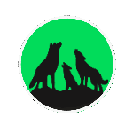
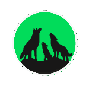
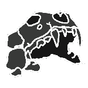
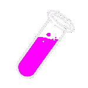

01
Formation and Assembly
The Mutant Shiba Club community is forming. Embracing the strength of both individuality and inclusivity. Celebrating individual differences, discovering commonalities, and coming together in unity. The Pack assembles.
The Mutant Shiba Club community is forming. Embracing the strength of both individuality and inclusivity. Celebrating individual differences, discovering commonalities, and coming together in unity. The Pack assembles.
The Pack has assembled and continues to get stronger. Being a member of the Mutant Shiba Club is highly coveted. Benefits of pack membership transcend into both virtual and real-life collaborations, merchandise, social events, commercial rights, and more.
The Mutant Shiba's final form has yet to be revealed. The Zenith Serum has been reconstructed and will be distributed to those who desire. The only thing that is certain is no one knows what will happen next.
Thousands of years ago, the Balavrak pack, members of a secret society comprised of direct descendants of the Genesis Shiba, were summoned. At the time, the Shiba’s very existence was being threatened. The Gode Collective, a known exterminator clan, had assembled in orbit high above the planet. The Gode was set on destroying the Shiba and commandeering their world for a rogue outpost. The Balavrak constituted some of the greatest minds of the Shiba. They knew that defeating the Gode Collective would require something extraordinary. The Balavrak came together with a common goal: to create the Zenith Serum. This serum would alter the Shiba at a genetic level and provide them with such physical and intellectual prowess that they would be able to defeat the Gode Collective. War was imminent. Destruction was inevitable. Death was extensive.
The Shiba defeated the Gode Collective, but victory came at a price. While successful in its genetic alteration, the Zenith Serum had a side effect. It created significant physical alterations in the Shiba and resulted in a new lineage that came to be known as the Mutant Shibas. Initially, the Mutant Shibas were celebrated and revered. But over time, they were shunned by society due to their altered appearance. Some mutants celebrated their differences, but others were set on reverting to pre-serum conditions. Conflict ensued. The Balavrak had already witnessed the power the Zenith Serum bestowed, now they were watching the conflict it could wreak within the Shiba family. The Balavrak realized that often perfection lies within imperfection. Fearing for the future of all Shibas, they took action. A key component in the creation of Zenith Serum was the Astatine Crystal. In a secret ceremony, the Balavrak shattered the crystal into seven fragments. These fragments were then hidden in treacherous locations across the planet, an attempt to dissuade anyone ever reuniting the seven fragments again, an effort to banish the Zenith Serum forever. For generations, attempts were made to find these seven crystal fragments. Many died in their attempts, but few were successful. Six of the crystal fragments were found, and a rumor spread across the planet that the seventh and final crystal fragment had been located. Anticipation spread. Fear grew.
The Astatine Crystal calls. It is whole once again. Mutant Shibas are gathering for The Ascendancy. Many hope to achieve their highest version of being, while others hope to return to what they were before. The future is here. Are you prepared?